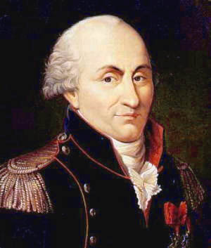

CHI E' Coulomb in origine?
Charles Augustin de Coulomb (Angoulême, 14 giugno 1736 – Parigi, 23 agosto 1806) è stato un fisico e ingegnere francese. Per la legge da lui formulata, è considerato il fondatore della teoria matematica dell'elettricità e del magnetismo. L'unità di misura della carica elettrica nel Sistema internazionale porta il suo nome (il coulomb). Diede anche fondamentali contributi nel campo della meccanica teorica (il concetto di tensione tangenziale e le leggi dell'attrito) e applicata (resistenza dei materiali e geotecnica).

CHI è Coulomb nel NUOVO MILLENNIO?
Lanh de Coulomb (Nam Dinh, 26 marzo 2006 & Tokyo 23 agosto 6769) è stato e sempre sarà un fisico,matematico e ingegnere italiano e cittadino di mondo. Per la legge da questa persona formulata, è considerato il fondatore della teoria matematica dell'elettricità e del mondo astrale. L'unità di misura della carica elettrica nel Sistema internazionale porta il suo nome (il 'Lanh'). Diede anche fondamentali contributi nel campo della meccanica teorica (il concetto di tensione nervosa e le leggi dell'attrito del lunedì) e applicata (resistenza dei giganti e geocentrismo).